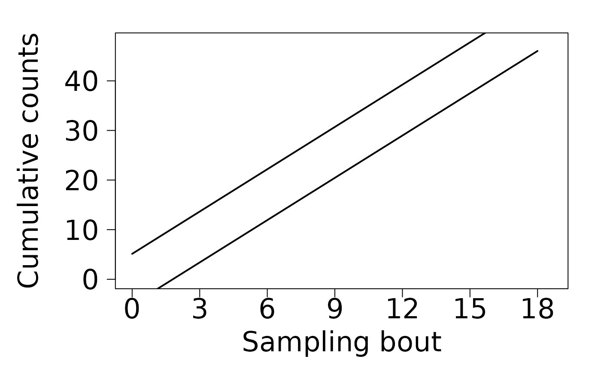

Runs a Sequential Probability Ratio Test for hypotheses about population densities of the form \(H_{0}:\mu = \psi_{0}\) vs. \(H_{1}:\mu < \psi_{1}\), where \(\psi_{0} < \psi_{1}\). Data is treated in a sequential framework.
Arguments
- data
Optional vector of count data (NAs not allowed). Each value is considered a sampling bout over time. Can't process group sequential data. If not provided (NA), returns a chart with stop lines and stop lines coefficients. If provided, returns a
"SPRT"object.- mu0
Single non-negative number with the value for the low hypothesized population density, \(\psi_{0}\).
- mu1
Single non-negative number with the value for the high hypothesized population density, \(\psi_{1}\).
- density_func
Kernel probability density function for the data. See details.
- overdispersion
A number specifying the overdispersion parameter. Only required when using
"negative binomial"as kernel density. See details.- alpha
Single number indicating tolerable type I error rate.
- beta
Single number indicating tolerable type II error rate.
Details
The density_func argument should be specified as character string.
Acceptable options are "poisson", "negative binomial", and
"binomial". As far as we know, no one has ever calculated and published stop
lines for the beta-binomial family. The overdispersion parameter should only be
specified as a constant. In contrast to the STBP, SPRT is only use overdispersion
to calculate stop lines, so the estimate for the threshold population density
should be used (e.g., at \(\psi_{0} < \psi < \psi_{1}\)).
References
Binns, M.R., Nyrop, J.P. & Werf, W.v.d. (2000) Sampling and monitoring in crop protection: the theoretical basis for developing practical decision guides. CABI Pub., Wallingford, Oxon, UK; New York, N.Y.
Wald, A. (1945) Sequential Tests of Statistical Hypotheses. The Annals of Mathematical Statistics 16(2): 117-186.
Examples
# If no data is provided, a chart with stop lines and a summary of the test
# with coefficients for stop lines is returned,
sprt(data = NA,
mu0 = 2,
mu1 = 4,
density_func = "negative binomial",
overdispersion = 4.6,
alpha = 0.1,
beta = 0.1) #returns a summary and a chart

#>
#> Sequential Probability Ratio Test - Stop lines
#> Family: negative binomial
#> H0: mu = 2
#> H1: mu = 4
#>
#> Upper line coefficients:
#> Intercept = 5.128255
#> Slope = 2.841808
#> Lower line coefficients:
#> Intercept = -5.128255
#> Slope = 2.841808
# If data is provided, an object of class "SPRT" is returned.
counts <- c(2, 5, 6, 2, 7)
test11 <- sprt(data = counts,
mu0 = 2,
mu1 = 4,
density_func = "negative binomial",
overdispersion = 4.6,
alpha = 0.1,
beta = 0.1)
test11 # returns "accept H1" after 5 sampling bouts processed.
#>
#> Sequential Probability Ratio Test
#> Family: negative binomial
#> H0: mu = 2
#> H1: mu = 4
#>
#> Recommendation based on provided criteria: accept H1
#> Number of sampling bouts processed: 5
## End (Not run)